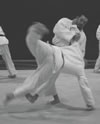

Tauasa TimoteoTauasa began his judo training in Roseville, CA, in 1986. He received his black belt in 1990 and competed at both the national and international level. He was promoted to nidan in 1992.
While in the US Army, he trained in South Korea and Fort Bragg, North Carolina, where he was promoted to sandan in 1994. He served as an enlisted combat medical specialist with the 82nd Airborne Division and was later commissioned as a US Army ordnance officer.
He received a BA in Sociology from Auburn University Montgomery and has worked as a software engineer for several large financial institutions and startups.
Honors & Achievements: